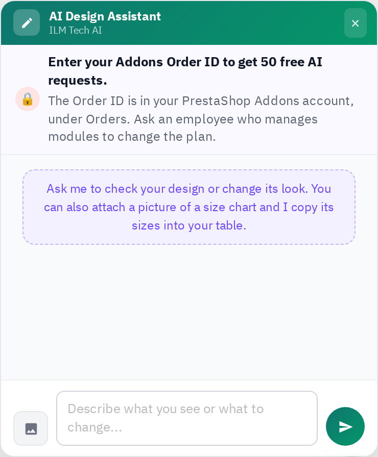

Inside the Sizechart Designer, the round AI button opens the AI Design Assistant (in the list, the AI button of a chart opens it straight away). Describe what to change (“make the header dark blue”, “add an inch unit”, “add a how-to-measure text next to the table”) or click Attach a picture to send a picture of a size chart you like: the assistant copies its sizes and look. Each answer that changes the design uses one request; an answer that changes nothing is free. Undo takes any change back.
